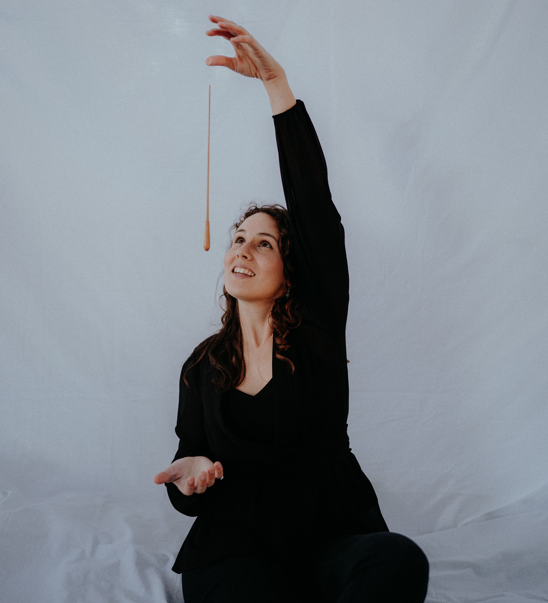
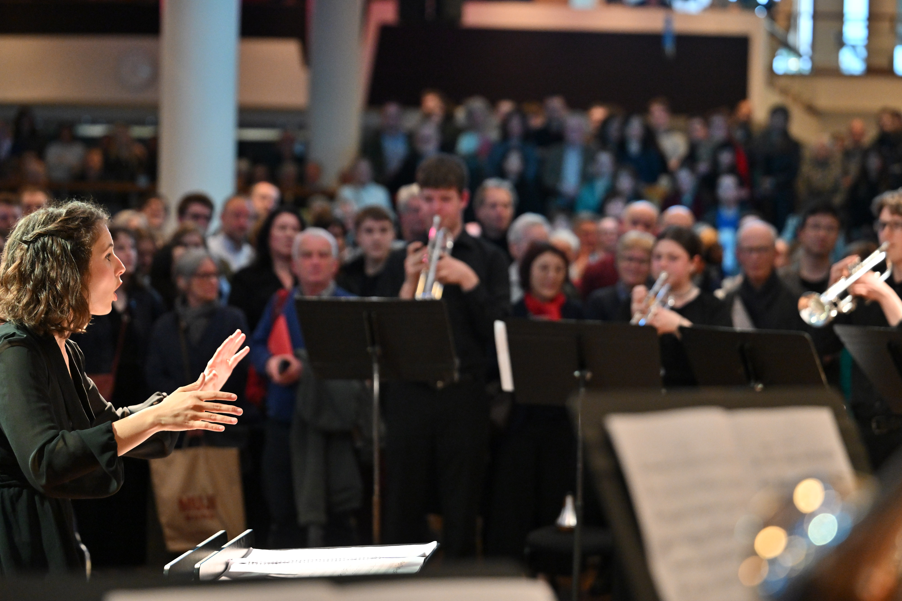
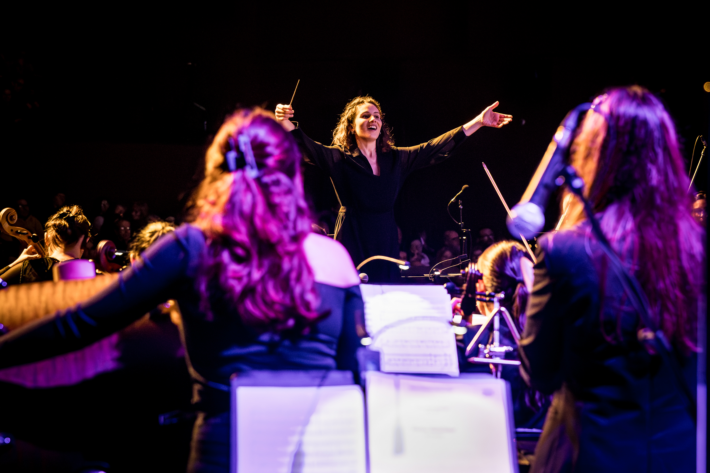

Save your photo as photo-home.jpgConducting Showcase — Welsh National Opera
The orchestra had hardly played together because of Covid and were seated to accommodate social distancing with all the added difficulties that brings, so not an easy situation for a young conductor. (...) The orchestra felt very quickly at ease, this was commented on by many seasoned professional players, and she displayed a calm authority way beyond her years and experience.
David Jones

Save as review-nyo.jpgNational Youth Orchestra of Great Britain — Spring Residency
If you went straight to your seat for the official 7.30pm kick-off of the National Youth Orchestra's Ignite concert, you missed the real start of the fun. Half an hour earlier, in the Royal Festival Hall's Clore Ballroom, a brass fanfare burst forth (...) and all eyes turned to the warm-up act (yes, it was also NYO, conducted by Constança Simas). The spotlight hopped from one orchestral group to the next, the performers scattered around the space, for what turned out to be more than half an hour of music. No half-measures here.
Rebecca Franks — The Times
In recent years, Constança continued to work with numerous orchestras in Portugal, such as the Gulbenkian Orchestra, the Algarve Orchestra, the Orquestra das Beiras, the Portuguese Pop Orchestra, the Orquestra do Norte, the Orquestra sem Fronteiras, and the Orquestra Clássica do Centro. This season she returned to the National Youth Orchestra of Great Britain (NYO) as associate conductor of the Winter Residency. She has worked with NYO since 2023, leading the NYO Open programme and conducting both the NYO and NYO Inspire in the Spring, Summer, and Autumn programmes, with tours across the United Kingdom.
Constança has conducted several youth international orchestra residencies across Portugal (Gestos 2025, Estágio de Góis 2025, Estágio JODB 2026). In 2023/2024, she held the position of conductor and coordinator of the Zohra Orchestra, where she was responsible for teaching orchestral conducting to young Afghan women. Internationally, she conducted the European Doctors Orchestra in 2024 at the Glasshouse in Newcastle and also made her debut with the Southbank Sinfonia in London.
She has served as assistant conductor in various productions with the BBC National Orchestra of Wales, the Welsh National Opera, the Royal Northern Sinfonia, and the Metropolitana Orchestra of Lisbon. At the Rivoli Theatre in Porto, she was the music director for the opera Lugar Comum by Sofia Sousa Rocha and the Contratempus Quartet, which premiered in November 2022.
As a participant in the WoCo Gateshead 2022–24 program, she occasionally conducts the Royal Northern Sinfonia and has also received mentorship from Marin Alsop as part of the Taki Alsop Conducting Fellowship. In 2021–2022, she was the resident conductor for the Young Women Opera Makers at the Académie du Festival Aix-en-Provence and a fellow of the Georgia Symphony Orchestra programme in Atlanta.
Constança is proactive in creating concerts with messages and concepts relevant to today's world, having premiered works by Portuguese composers and produced performances aimed at reaching more diverse audiences. As part of this mission, she also conducted concerts from the Maratonas com Orquestra de Bolso series with the Orquestra sem Fronteiras in June 2023 and May 2025.

Save as photo-about.jpgIn 2021, Constança completed her Master's degree in Orchestral Conducting with Distinction at the Royal Welsh College of Music and Drama, studying under Professor David Jones. She began her studies in Lisbon, earning her Bachelor's degree in Orchestral Conducting at the Academia Nacional Superior de Orquestra Metropolitana in Lisbon, where she studied with Professor Jean-Marc Burfin. She received several awards for her performance at the College, granted both by the institution itself and by the Calouste Gulbenkian Foundation in Portugal.
Throughout her career, she has had the opportunity to conduct the Malta Philharmonic Orchestra, the Athens Philharmonia Orchestra, the Ealing Symphony Orchestra and Choir, the Northampton Symphony Orchestra, and the North Staffordshire Symphony Orchestra. She has also been mentored by internationally renowned conductors such as Péter Eötvös, Marin Alsop, Johannes Schlaefli, Baldur Brönnimann, Carlo Rizzi, Ryan Bancroft, Magnus Lindberg, Elena Schwarz, Jean-Sébastien Béréau, Scott Sandmeier, Emilio Pomàrico, Robert Delcroix, and Michalis Economou.
What first amazed me about conducting were the infinite possibilities of interpretation and understanding of orchestral music. As I'm growing I notice that my love for music has a lot more to do with the empathy and vulnerability of getting an orchestra together to achieve a cohesive vision, creating music that is vibrant and alive.
Nos últimos anos, Constança tem continuado a trabalhar com inúmeras orquestras em Portugal, como a Orquestra Gulbenkian, a Orquestra do Algarve, a Orquestra das Beiras, a Orquestra Pop Portuguesa, a Orquestra do Norte, a Orquestra sem Fronteiras e a Orquestra Clássica do Centro.
Nesta temporada, regressou à National Youth Orchestra of Great Britain (NYO) como maestrina associada da Residência de Inverno. Tem colaborado com a NYO desde 2023, liderando o programa NYO Open e dirigindo tanto a NYO como a NYO Inspire nos programas de Primavera, Verão e Outono, com digressões pelo Reino Unido. Recentemente, Constança dirigiu várias residências orquestrais juvenis em Portugal (Gestos 2025, Estágio de Góis 2025, Estágio JODB 2026). Em 2023/2024, ocupou o cargo de maestrina e coordenadora da Orquestra Zohra, onde foi responsável pelo ensino de direção orquestral a jovens mulheres afegãs.
A nível internacional, dirigiu a European Doctors Orchestra em 2024 na Glasshouse em Newcastle e estreou-se também com a Southbank Sinfonia em Londres. Exerceu funções de maestrina assistente em várias produções com a BBC National Orchestra of Wales, a Welsh National Opera, a Royal Northern Sinfonia e a Orquestra Metropolitana de Lisboa. No Teatro Rivoli do Porto foi diretora musical da Ópera Lugar Comum por Sofia Sousa Rocha e o Quarteto Contratempus, que estreou em Novembro de 2022.
Como participante do programa WoCo Gateshead 2022–24, dirige esporadicamente a Royal Northern Sinfonia e recebeu também mentoria de Marin Alsop como parte da Taki Alsop Conducting Fellowship. Em 2021/2022 foi maestra residente do Young Women Opera Makers da Académie du Festival Aix-en-Provence e fellow do programa da Georgia Symphony Orchestra em Atlanta.
Constança é proativa em criar concertos com mensagens e conceitos relevantes para a actualidade, tendo estreado obras por compositores Portugueses e produzido espectáculos focados em atingir públicos mais diversos. Como parte desta missão dirigiu também concertos das Maratonas com Orquestra de Bolso da Orquestra sem Fronteiras em Junho de 2023 e Maio de 2025.
Constança terminou em 2021 o mestrado de Direcção de Orquestra com Distinção no Royal Welsh College of Music and Drama, na classe do Professor David Jones. Iniciou os seus estudos em Lisboa completando a licenciatura também em Direção de Orquestra na Academia Nacional Superior de Orquestra Metropolitana em Lisboa, onde estudou com o Professor Jean-Marc Burfin. Ganhou vários prémios pela sua prestação no College, presenteados tanto pela própria instituição como também pela Fundação Calouste Gulbenkian em Portugal.
No seu percurso teve a oportunidade de dirigir a Malta Philharmonic Orchestra, a Athens Philharmonia Orchestra, a Ealing Symphony Orchestra e coro, a Northampton Symphony Orchestra e a North Staffordshire Symphony Orchestra. Teve também como mentores os Maestros de reputação internacional Péter Eötvös, Marin Alsop, Johannes Schlaefli, Baldur Brönnimann, Carlo Rizzi, Ryan Bancroft, Magnus Lindberg, Elena Schwarz, Jean-Sébastien Béréau, Scott Sandmeier, Emilio Pomàrico, Robert Delcroix e Michalis Economou.
O que primeiro me fascinou na direção de orquestra foram as infinitas possibilidades de interpretação e compreensão da música orquestral. À medida que vou crescendo, percebo que o meu amor pela música tem muito mais a ver com a empatia e a vulnerabilidade de reunir uma orquestra em torno de uma visão coesa, criando música que seja vibrante e viva.
Tchaikovsky, Symphony no. 4
Stravinsky, Pulcinella
Gershwin, An American in Paris
Mendelssohn, Italian Symphony
For professional enquiries:
constancasimas.office@gmail.com